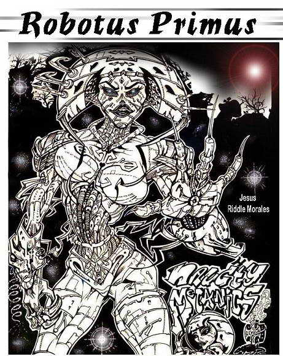
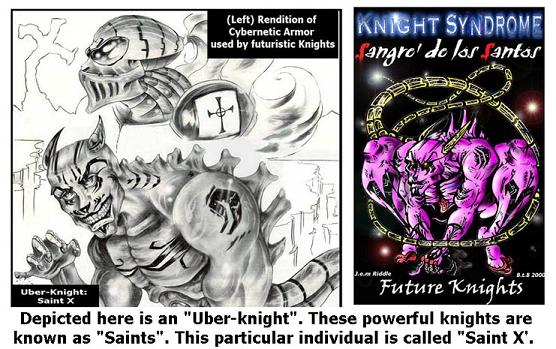

Comic Art
Original Comic Series
More Speculative Scenarios
Naughty Mechanics
This harrowing tale is a depiction of what could happen in the very near future or possibly even now. Based on information regarding biological and chemical weaponization, this grisly fable proposes a dangerous circumstance where an accidentally weaponized version of flesh-eating bacteria is released and posseses a great threat, not only to mankind, but nearly everything alive! Cleverly structured over a similar plot line to 1952s Wages of Fear, and 1979s the Sorcerer, this extinction fable rips through the skeptics imagination with entertaining originality and gripping suspense.

After the year 20015, a new breed of intelligent beings will coexists with humankind. The concept drawing on the right depicts and Asian model of an android. (The Japanese already have a fully functional robot as we speak.) It will have smarter, faster, and surprisingly innovative computing ability for an early model. Based on a psychological survey, this version of Robotus Primus has a female visage to appear more docile and non-threatening.
A Likely Integration
In the future, the arrival of adapters, which incorporate silicon chips, will integrate humans with machines. In this future, possible skirmishes started over technology stocks and evolving religious ideals may initiate feudal wars between nations. In the scene on the right, just such a feud is taking place. Here, two Neo-Knights" are fighting over technology colonies. The flexible armor they wear is actually embedded in their bodies and can form various styles. It serves as a protector against harsh weather, projectiles, and can even heal wounds from inside its husk! In this scenario, since their armor is so well insulted against projectiles, they are forced to engage in a throwback style of fighting. Using sword-like weapons, which are powered by fusion force, they clash these, retractable, magnetic Chain Swords with awesome force. Rotating, diamond bits spurred by magnetic force; give the knights weapons the ability to literally dismember each other!
The War To End All Wars
Although war seems a likely transgression in our future, the rising template of technology will eventually bide peace. As Homo Cyberneticus falls obsolete in the face of Homo Hybridus, movements geared toward social healing and the merging of mind, body, and technology will eventually replace the tech race with a view of more harmonic living. Military campaigns will cease and a new age of unity will evolve. The scene shown here depicts a vicious time before the age of unity and clearly features cybernetic-enhanced warriors bred to fight in national missions. Their body temperatures regulated by their integrated armor, makes them impervious to weather conditions, while dangerous machinations substitute some of their limbs.

Wars in the future may take on strange tactics, with some reverting to more primitive tactics. In the scenes depicted in the concept art here, these futuristic knights are forced to fight in close quarters. This is because the projectile weapons are impotent against such well-reinforced armor. Flexible, strong and technology based, this armor is so well made, that enemies have to use strong cutting weapons to pierce its husk.
The knights use fusion-powered swords that act like highly advanced chain swords, while they hack each other apart. Its situations like these that mirror close quarter combat circumstances in our modern world. Although in present times, war could be initiated through nuclear fears, the bomb is still the most powerful repellent to mass destruction and promotes the combat of infantry battles, rather than mass destruction through nuclear attacks.
^ Top ^